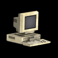

Hieronder volgt een lijst van alle lichtbronnen die in het lokaal te vinden zijn:
 Raam
Raam
De ramen zijn zelfs in het donker makkelijk te zien en kunnen worden ingeslagen met een kogel van een katapult of een cherry bomb. Als het raam is gebarsten laat het een lichtstraal binnen die het gehele lokaal overbrugt. Ramen kunnen niet meer worden gemaakt en het licht schint voor onbeperkte tijd in alle puzzellokalen. Ramen dragen niet bij aan de lichtmeter, want ze hebben geen electriciteit nodig.
 Lamp
Lamp
Je kunt de lamp aan- of uitdoen. Het geeft een middelgrote cirkel van licht af. Elke lamp moet apart aan- en uitgedaan worden.
 Televisie
Televisie
De televisie kan niet direct aangedaan worden. De speler moet eerst de afstandsbediening van de tv vinden om de televisie hiermee aan te kunnen doen. De televisie produceert een klein lichtcirkeltje voor het scherm. Als er meerdere televisies in één lokaal zijn, dan kun je met de afstandsbediening de televisies afwisselen.

PC monitor
De monitors van de computer zijn allemaal met elkaar verbonden via een netwerk. Als je de monitor van een PC aandoet, gaan alle monitors in het lokaal aan. Als je één monitor uitdoet, gaan ze allemaal uit. De monitors van de PC vullen de lichtmeter daarom nogal snel op. PC monitors hebben ook de neiging omkortsluitingen te veroorzaken. Als het het licht van de monitor begint te flikkeren, dan moet de speler uit de weg gaan om te zorgen dat hij niet opeens in de duisternis belandt. Er is nooit meer dan één monitor tegelijk die een kortsluiting veroorzaakt. Elke monitor die een kortsluiting veroorzaakt, gaat na een paar seconden weer aan.
 Oscillerend licht
Oscillerend licht
Het oscillerend licht werkt op dezelfde manierals een oscillerende tafelventilator. Het draait langzaam met een gestaag tempo heen en weer. Het stopt elke keer een paar seconden aan het einde en draait dan weer terug in de tegengestelde richting. Het oscillerend licht produceert een grote lichtstraal, vergelijkbaar met de straal van Jake’s zaklantaarn, waarmee je je door het lokaal kunt bewegen. Als je een oscillerend licht uitdoet, dan behoudt het de stand voor de volgende keer als je het weer aandoet.
 Bewegingssensor
Bewegingssensor
De bewegingssensor schijnt een enorme lichtstraal naar beneden wanneer Jake of een projectiel binnen een meter van de bewegingssensor komt. Als het licht eenmaal is geactiveerd, blijft het 10 seconden aan voordat het begint te flikkeren en vervolgens uitgaat. De bewegingssensor kan opnieuw geactiveerd wordennadat het is uitgegaan. Het is echter niet mogelijk om de bewegingssensor voor langer dan 10 seconden verlicht te laten.